Бабхинское озеро и его туманные окрестности
(18-19 августа 2007)
Прогноз погоды на выходные обещал дождь, но Юле надоело сидеть в Слюдянке, и она мне сказала - "Надо быть оптимистами - будет солнце!". Наивная девушка :) Ладно, чего правда дома-то делать, хоть до мостика прогуляемся под дождем, так сказать для разминки, а там видно будет...
А с утра было видно солнце, и в обед было тоже видно, а вот потом было не видно. Но мы уже уверенно шли на подъем с мокрыми от росы ногами и отступать не собирались. Несколько человеков даже нас обогнали и радостно сообщили, что их еще с десяток будет :) Вдоль тропы подкреплялись черникой и мелкими орешками кедрового стланика, еще было много грибов-сыроежек, но мы не любители...
Вот и озеро. Интересно, а где же водопады? Кончились! Снега растаяли, и поток иссяк. Вот оно как бывает... Ладно, разберемся. Таборимся вдали от многолюдной компании и варим котелок гречневой каши. После ужина идем от озера вверх по ручью, искать хоть какие-то водопадики. Заодно и на озеро сверху посмотрим.
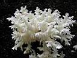 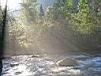 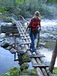 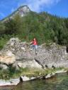 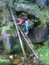
Коралловый гриб :: Солнечко :: Мостик :: Обеденный камень :: Лестница с прижима
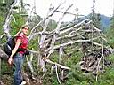 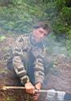 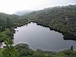 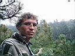 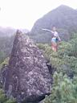
Юля и коряга :: Это я
носки сушу :: Бабхинское озеро :: Снова я :: Юлька у "камушка"
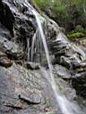 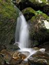 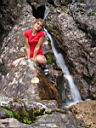 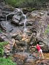 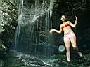
Водопады и Юлька
Надо сказать, что Юля - девушка с широко раскрытыми глазами, и все для нее в этом походе было ново и в диковинку :) Поэтому маленькие жиденькие водопадики впечатляли ее по полной программе, мрачные облачно-туманные виды приводили в восторг, и все-все-все ей было интересно. А я тихонько и по-доброму завидовал, и фотографировал ее во всех этих чудесных местах. Тем более, что фотографироваться Юля любит всегда и везде :)
В одном из таких чудесных мест мой старенький Canon выпрыгнул из сумки, пару раз долбанулся об камни и занырнул в ручей. Я его конечно достал, но вода выливалась из всех отверстий :) Юля тоже искупалась - полезла сфотаться под водопадик и пострадала :) Спускаемся к палатке, чтобы переодеться. Все равно на гору сегодня не полезем - Бабха затянута тучами. А будем мы гулять по окрестностям, сайгачить по огромным каменюкам-скалам и залазить в разные прикольные пещерки-расщелины. И фотать все-все-все на Юлькин фотик :) А соседские ребята все-таки сходили на Бабху. Ха, наверное, клево стоять на вершине в сплошном тумане, и высоты можно не бояццо :)
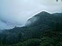 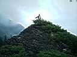 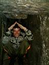 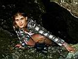 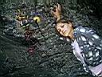
Туманные окресности : Большой такой камень : Я и Юлька в пещерках : РисуночеГ
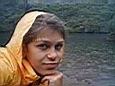 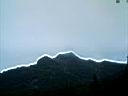 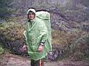 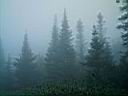 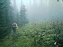
Юля и дождь на озере : Бабха выглянула : Зеленый человек : Ёлки в тумане
Ночью шел дождь, и утром тоже. Мелкий и нудный. Проснулись рано, доели вчерашнюю кашу и опять спать. Опять проснулись - уже полдень. Однако пора домой собираться... Самое интересное было уже внизу, когда мы к реке спустились и хлебали горячий перекусончик - выглянуло "оптимистическое солнце" и светило оно нам до самой трассы. Да так хорошо, что юная оптимистка вымокла до резинки от сами знаете чего :) Но у старого реалиста в запасе были теплые сухие вещи :)
На остановке ждали последнюю маршрутку
на 22:30. Бабушка-дачница спрашивала:
" - За ягодой ходили? За грибами?". " - Да нет, мы так, на озеро... " - отвечаем.
" - А где там озеро?" , " - Ну, оно там, в горах оно. Часов 7 надо идти."
" - Ой-ёёё! Ой, делати-то вам нечего! в такую даль ходить! Сходили бы вон в лес, отдохнули бы на природе!". Ну что тут бабушке ответишь?! Только улыбнулись :)
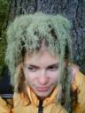
Сентябрь 2007
Алексей Белокрылов
|